使い方
旅の前に計画を育てて、当日は道のりを幹にして、旅のあとは写真と日記を実にして残す。Routree の流れを、画面ごとに紹介します。
1旅行を作る
旅行一覧の右上の「+」から、新しい旅行を作ります。
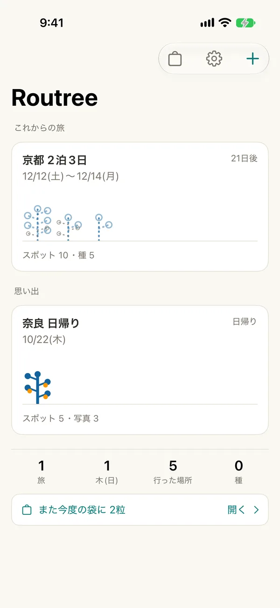
旅行一覧これからの旅と、思い出になった旅が並びます。1日が1本の木になって、旅の形がひと目で分かります。
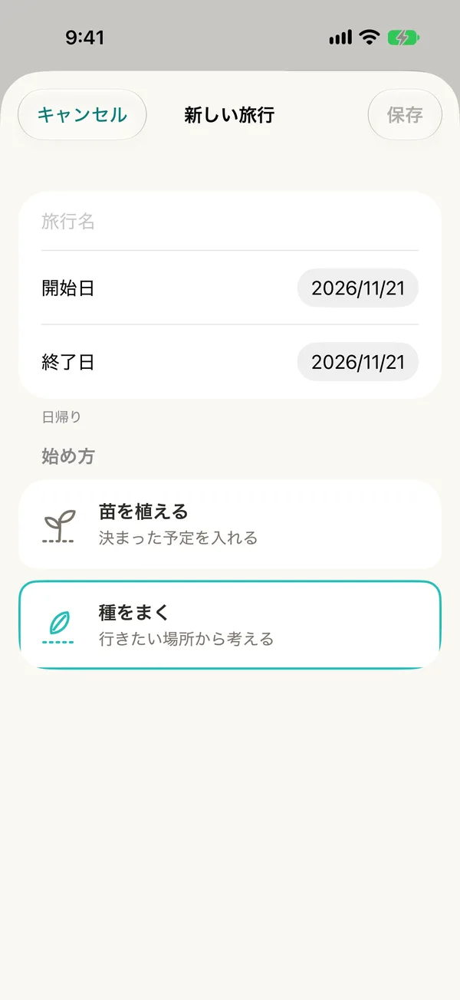
始め方を選ぶ予定が決まっているなら「苗を植える」。行きたい場所から考えたいなら「種をまく」を選びます。
2日の予定を組む
日ごとのページで、行く場所を上から順に並べます。
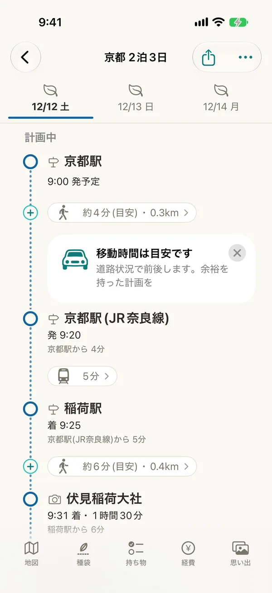
日のページスポットの間の「+」で、あいだに場所を足せます。移動時間は自動で計算され、着く時刻が出ます。
3場所を探す
スポットを足すときは、名前で検索するか、カテゴリから近くの場所を探します。
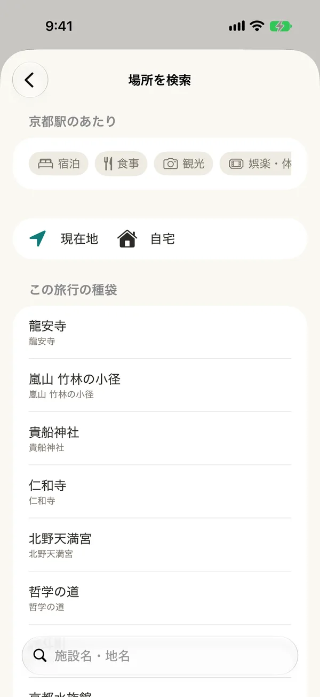
場所を検索前のスポットのあたりから、宿泊・食事・観光などで探せます。現在地や自宅、種袋の場所もすぐ選べます。
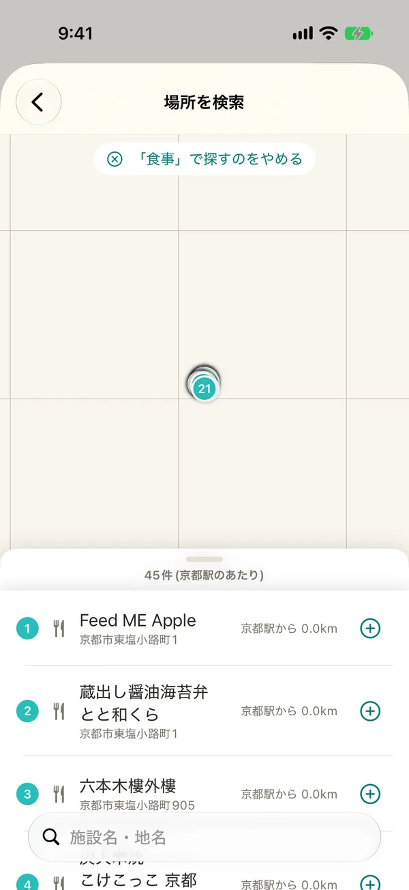
地図と一覧近い順に並びます。地図を動かすと「このあたりで探す」で探し直せます。
4移動を決める
スポットの間の移動の札を押すと、移動手段と時間を変えられます。
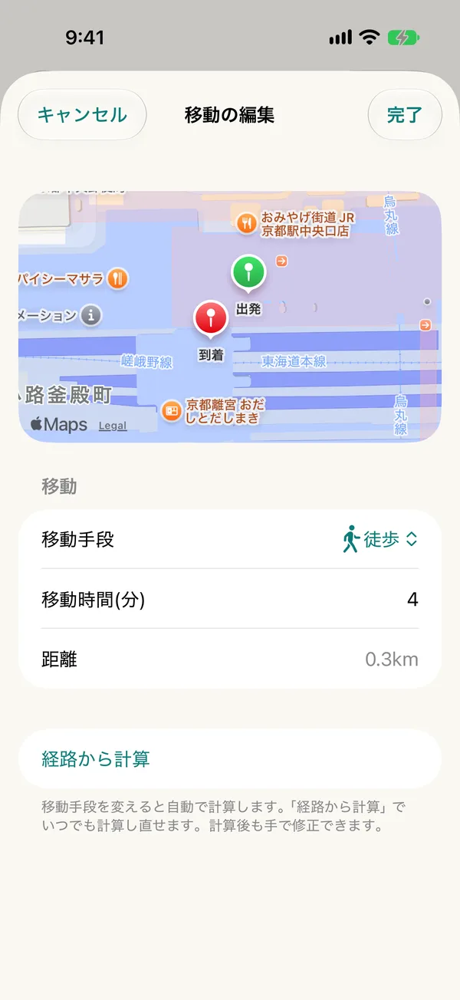
移動の編集車・徒歩・自転車は、選ぶと経路から時間を計算します。計算のあとに手で直すこともできます。
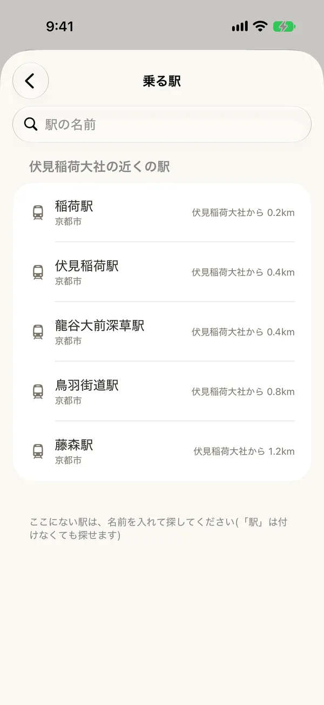
電車行き先を選んで、乗る駅・降りる駅・時刻を入れます。行き先の近くの駅が候補に出ます。
ひとこと: 移動時間は目安です。道路や電車の状況で前後するので、余裕を持った計画がおすすめです。
5種をまく・種袋
まだ日が決まっていない「行きたい場所」は、種として種袋に入れておきます。
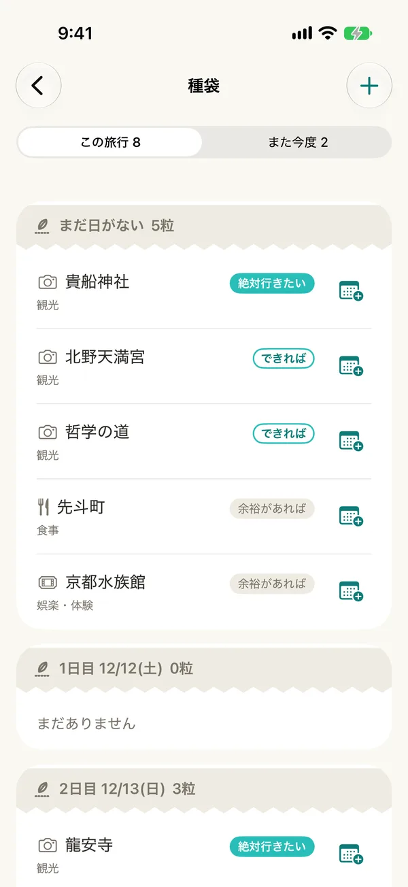
種袋行きたい度合い(絶対行きたい・できれば・余裕があれば)を付けて、日に振り分けます。
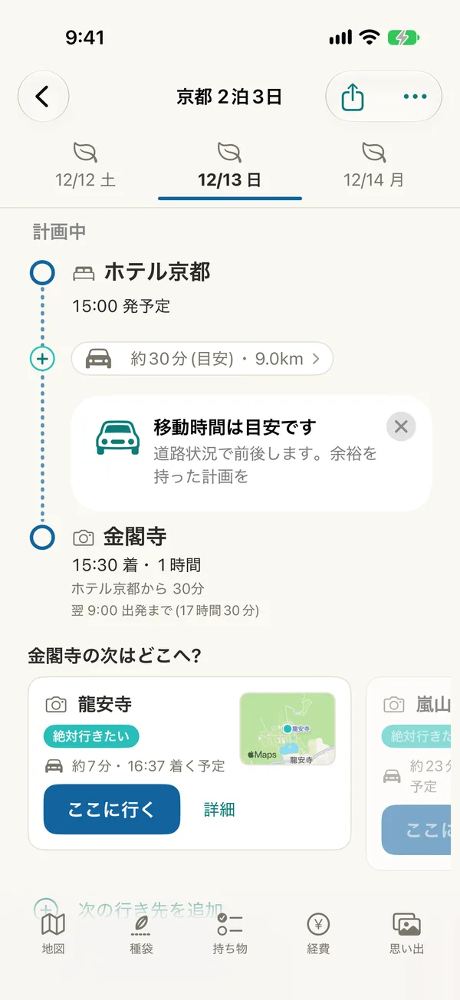
「次はどこへ?」日の最後に、種袋から次の行き先の候補がカードで出ます。「ここに行く」で予定に植えられます。
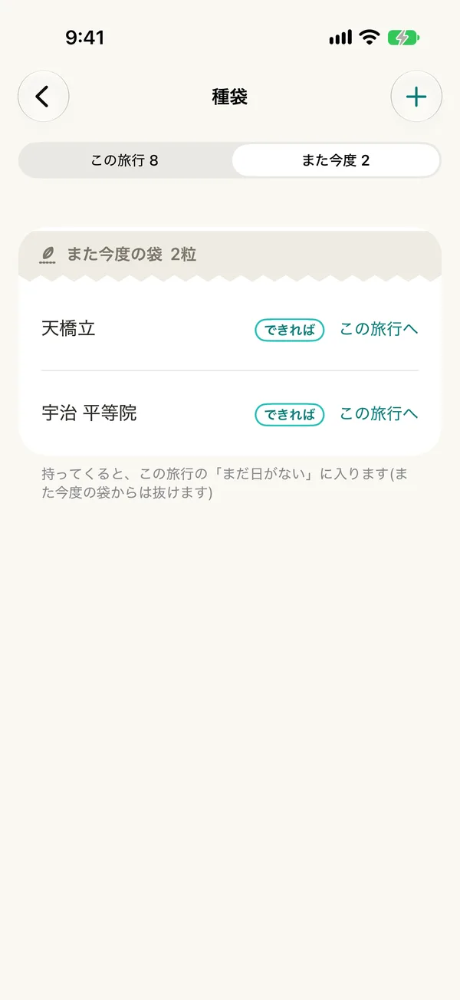
また今度の袋今回は行けなかった場所は、旅行をまたいで取っておけます。次の旅行で「この旅行へ」で持ってこられます。
6当日に使う
旅行の日になると、その日のページが「今日」になります。
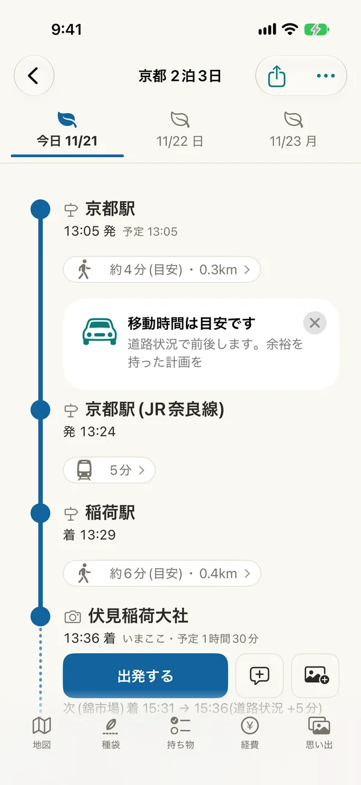
今日着いたら記録、出るときは「出発する」。通った道が幹になっていきます。次の場所に着く時刻も見直されます。
寄り道したときは: 移動の途中で寄った場所も、あとから足せます。木には双葉の印で残ります。
7経費と精算
旅行のお金も、同じアプリで記録できます。
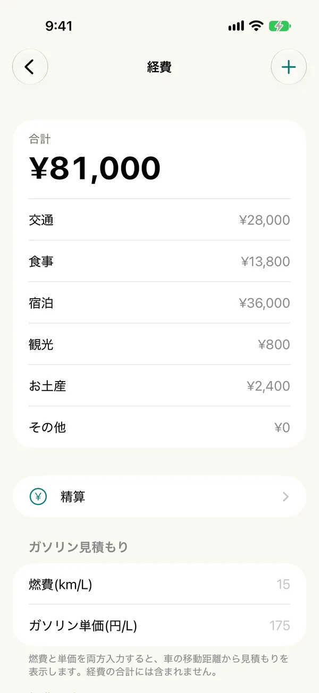
経費カテゴリごとの合計が出ます。車の旅なら、燃費とガソリン単価からガソリン代の見積もりも出せます。
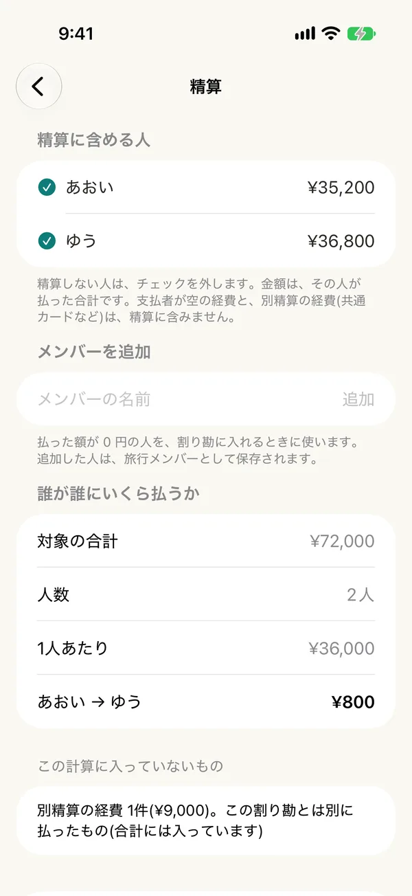
精算割り勘に入れる人を選ぶと、「誰が誰にいくら払うか」を出します。共通カードなどは別精算にできます。
8思い出を残す・共有する
旅のあとは、写真と日記が木の実になります。
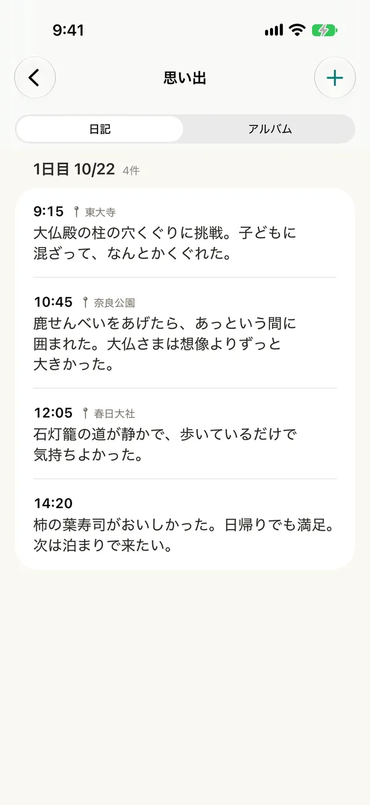
思い出スポットごとの日記と、写真のアルバムで旅をふり返れます。
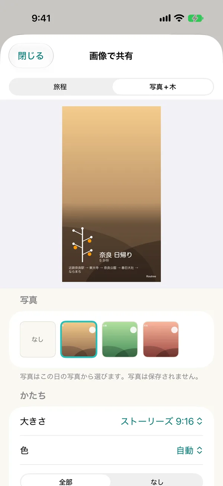
画像で共有写真と木を1枚の画像にして、SNS のストーリーズや投稿に使えます。
困ったときは
ご質問や不具合のご連絡は、サポートからお送りください。